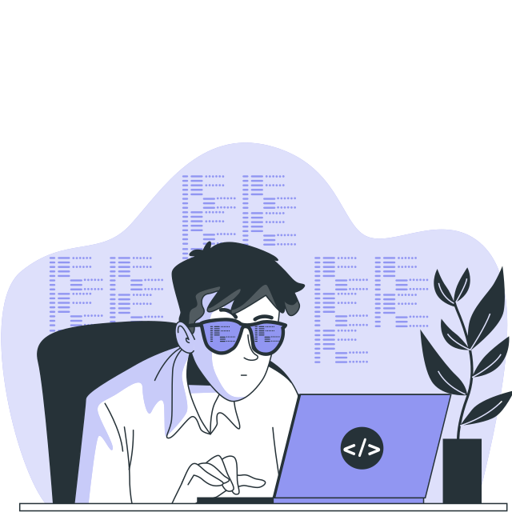

Front-end é a área de tecnologia que cria a interface de um site ou aplicativo. Profissionais usam HTML, CSS e JavaScript para melhorar a aparência e interatividade do sistema, proporcionando uma experiência agradável. Aprofunde-se na área de Front-End com os cursos da CodeRise.
Na CodeRise, você encontra cursos selecionados com carinho por estudantes como você.
Junte-se a nós, escolha um área e inicie em uma jornada de aprendizado e evolução.
Back-end é a área de tecnologia que desenvolve e mantém a parte "invisível" de um sistema. É o cérebro por trás de sites e aplicativos, garantindo o funcionamento correto. Na CodeRise você pode aprender os conceitos e técnicas para construção de sistemas eficientes, aprofunde-se na área com os nossos cursos.
Quality Assurance (QA) é a área da tecnologia responsável por garantir a qualidade e eficiência de um produto ou serviço. Profissionais de QA realizam testes, verificam a conformidade com padrões e identificam problemas para garantir a excelência. Aprofunde-se na área de Quality Assurance com os cursos oferecidos pela CodeRise.
Engenharia de Software é uma área focada no desenvolvimento e implementação de software de qualidade. Profissionais de engenharia de software utilizam métodos e técnicas para projetar, construir e testar sistemas de software eficientes e confiáveis. Aprofunde-se na área com os cursos oferecidos pela CodeRise.